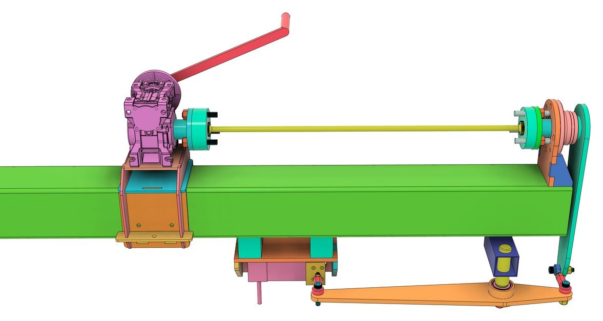

← Alle Projekte

Torsionsmessvorrichtung
2E Design | 2023 – 2024 | Konstruktion
Stabilisator-Abstimmung

Was?
- Entwicklung einer Torsionsmessvorrichtung zur Analyse der mechanischen Eigenschaften von Stabilisatoren in Kraftfahrzeugen.
Wie?
- Umsetzung eines Naben- und Lageraufbaus zur Messung der Stabilisatorverdrehung.
- Lasteinleitung über Hebelarme in eine Kraftmessdose mit 1 t Nennlast für genaue Messungen.
Ergebnisse
- Die Vorrichtung ermöglichte die Messung und Einstellung der Verdrehsteifigkeit von Stabilisatoren für eine optimale Abstimmung der Rennfahrzeuge.